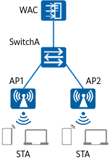

Users need to associate with the nearest APs when moving within the coverage area of a WLAN, thereby ensuring optimal WLAN access experience.
Basic configurations for WLAN STA access have been completed. For details, see "Configuration Examples for WLAN STA Management" in CLI Configuration Guide > WLAN Configuration > WLAN STA Management Configuration.

Item |
Data |
|---|---|
RRM profile |
Name: wlan-rrm |
Air scan profile |
|
2.4 GHz radio profile |
|
5 GHz radio profile |
|
Configure multicast packet suppression on interfaces directly connecting the device to APs.
For details on how to configure traffic suppression, see How Do I Configure Multicast Packet Suppression to Reduce Impact of a Large Number of Low-Rate Multicast Packets on the Wireless Network?
Check Item |
Command |
Data |
|---|---|---|
AP group to which an AP belongs |
display ap all |
AP group: ap-group1 |
All profiles bound to the AP group |
display ap-group name ap-group1 |
VAP profile: wlan-net AP system profile: ap-system |
All profiles bound to the VAP profile |
display vap-profile name wlan-net |
SSID profile: wlan-net |
# Create an air scan profile and specify an air scan channel set to contain all channels supported by the country code.
<HUAWEI> system-view [HUAWEI] sysname WAC [WAC] wlan [WAC-wlan] air-scan-profile name wlan-air-scan [WAC-wlan-air-scan-prof-wlan-air-scan] undo scan-disable [WAC-wlan-air-scan-prof-wlan-air-scan] scan-channel-set country-channel [WAC-wlan-air-scan-prof-wlan-air-scan] quit
# Create the RRM profile wlan-rrm and enable AI roaming.
[WAC-wlan] rrm-profile name wlan-rrm [WAC-wlan-rrm-prof-wlan-rrm] undo smart-roam ai-mode disable [WAC-wlan-rrm-prof-wlan-rrm] quit
# Bind the air scan profile wlan-air-scan and RRM profile wlan-rrm to radios in an AP group.
[WAC-wlan] radio-2g-profile name wlan-radio2g [WAC-wlan-radio-2g-prof-wlan-radio2g] air-scan-profile wlan-air-scan [WAC-wlan-radio-2g-prof-wlan-radio2g] rrm-profile wlan-rrm [WAC-wlan-radio-2g-prof-wlan-radio2g] quit [WAC-wlan] radio-5g-profile name wlan-radio5g [WAC-wlan-radio-5g-prof-wlan-radio5g] air-scan-profile wlan-air-scan [WAC-wlan-radio-5g-prof-wlan-radio5g] rrm-profile wlan-rrm [WAC-wlan-radio-5g-prof-wlan-radio5g] quit [WAC-wlan] ap-group name ap-group1 [WAC-wlan-ap-group-ap-group1] radio-2g-profile wlan-radio2g radio 0 Warning: This action may cause service interruption. Continue?[Y/N]y [WAC-wlan-ap-group-ap-group1] radio-5g-profile wlan-radio5g radio 1 Warning: This action may cause service interruption. Continue?[Y/N]y [WAC-wlan-ap-group-ap-group1] quit
# Run the display rrm-profile name wlan-rrm command on the WAC to check the AI roaming configuration.
[WAC-wlan] display rrm-profile name wlan-rrm ------------------------------------------------------------ ... Smart-roam : enable Smart-roam AI mode : enable ... ------------------------------------------------------------
# Users can enjoy good roaming experience when moving in the WLAN coverage area.
wlan air-scan-profile name wlan-air-scan rrm-profile name wlan-rrm radio-2g-profile name wlan-radio2g rrm-profile wlan-rrm air-scan-profile wlan-air-scan radio-5g-profile name wlan-radio5g rrm-profile wlan-rrm air-scan-profile wlan-air-scan ap-group name ap-group1 radio 0 radio-2g-profile wlan-radio2g radio 1 radio-5g-profile wlan-radio5g